In this section, we will state and prove the formula for the tail distribution of the sum of independent, real valued, random variables that satisfy the Lévy Property.
If one restricts the formula to the case of sums of independent, identically distributed random variables, one obtains a formula very similar to the main result of Hahn and Klass (1997). The main differences are that their inequality involves one sided inequalities, and also that their inequality is more precise.
This formula also has a strong resemblance to the result of Lata a.
As we shall show in Section 6, computing the
a.
As we shall show in Section 6, computing the  norm of
norm of  is
effectively equivalent to computing
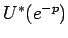. Then if one
notices that 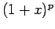 is very close to 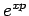 for small positive
is
effectively equivalent to computing
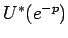. Then if one
notices that 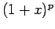 is very close to 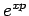 for small positive  , one
can see that this result and the result of Lata
, one
can see that this result and the result of Lata a are very closely related.
Presumably one could derive Lata
a are very closely related.
Presumably one could derive Lata a's result by combining Theorem 5.1
with
Theorem 6.1. However the technical difficulties are quite tricky, and
since
Lata
a's result by combining Theorem 5.1
with
Theorem 6.1. However the technical difficulties are quite tricky, and
since
Lata a's proof is elegant, we will not carry out this program here.
a's proof is elegant, we will not carry out this program here.
| 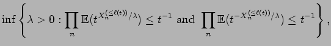 | |||
| 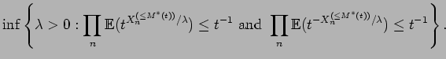 |
Let us start with gaining some understanding of
Orlicz spaces. There is a huge literature on Orlicz spaces,
see for example Lindenstrauss and Tzafriri (1977).
Suppose that
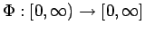 is an increasing function (usually convex with
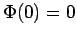). Then the Orlicz norm of a random variable  is defined
according to
the formula
is defined
according to
the formula
Proof: Suppose first that
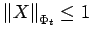. Then
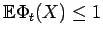, which implies that
Conversely, suppose that for 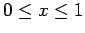. Then
Proof of Theorem 5.1: Let us start with the proof that
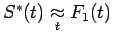. Since the random variables
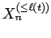
are independent, we have that

Next, we apply Lemma 5.2, and we see that
| 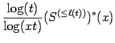 | 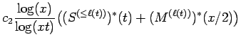 | ||
| 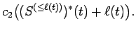 |
To show that 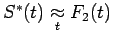 is an almost identical proof.